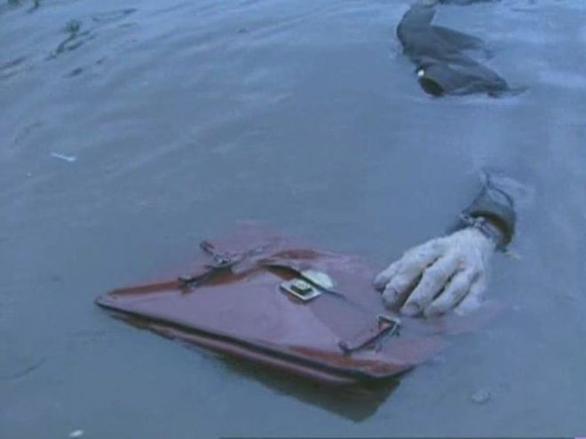

Operation Mincemeat was a successful British deception operation of the Second World War to disguise the 1943 Allied invasion of Sicily. Two members of British intelligence obtained the body of Glyndwr Michael, a tramp who died from eating rat poison, dressed him as an officer of the Royal Marines and placed personal items on him identifying him as the fictitious Captain (Acting Major) William Martin. Correspondence between two British generals which suggested that the Allies planned to invade Greece and Sardinia, with Sicily as merely the target of a feint, was also placed on the body.
On 29 September 1939, soon after the start of the Second World War, Rear Admiral John Godfrey, the Director of Naval Intelligence, circulated the Trout memo, a paper that compared the deception of an enemy in wartime to fly fishing. The historian Ben Macintyre observes that although the paper was published under Godfrey's name, it "bore all the hallmarks of ... Lieutenant Commander Ian Fleming", Godfrey's personal assistant. The memo contained a number of schemes to be considered for use against the Axis powers to lure U-boats and German surface ships towards minefields. Number 28 on the list was titled: "A Suggestion (not a very nice one)"; it was an idea to plant misleading papers on a corpse that would be found by the enemy. The following suggestion is used in a book by Basil Thomson: a corpse dressed as an airman, with despatches in his pockets, could be dropped on the coast, supposedly from a parachute that has failed. I understand there is no difficulty in obtaining corpses at the Naval Hospital, but, of course, it would have to be a fresh one. The deliberate planting of fake documents to be found by the enemy was not new; known as the Haversack Ruse, it had been practised by the British and others in the First and Second World Wars. In August 1942, before the Battle of Alam el Halfa, a corpse was placed in a blown-up scout car, in a minefield facing the German 90th Light Division. On the corpse was a map purportedly showing the locations of British minefields; the Germans used the map, and their tanks were routed to areas of soft sand where they bogged down. In September 1942 an aircraft flying from Britain to Gibraltar crashed off Cádiz. All aboard were killed, including Paymaster-Lieutenant James Hadden Turner a courier carrying top secret documents and a French agent. Turner's documents included a letter from General Mark Clark, the American Deputy Commander of the Allied Expeditionary Force, to General Noel Mason-MacFarlane, British Governor and Commander in Chief of Gibraltar, informing him that General Dwight D. Eisenhower, the Supreme Commander, would arrive in Gibraltar on the eve of Operation Torch's "target date" of 4 November. Turner's body washed up on the beach near Tarifa and was recovered by the Spanish authorities. When the body was returned to the British, the letter was still on it, and technicians determined that the letter had not been opened. Other Allied intelligence sources established that the notebook carried by the French agent had been copied by the Germans, but they dismissed it as being disinformation. To British planners it showed that some material that was obtained by the Spanish was being passed to the Germans.
A month after the Turner crash, the British intelligence officer Charles Cholmondeley outlined his own variation of the Trout memo plan, codenamed Trojan Horse, after the Achaean deception from the Trojan War. His plan was A body is obtained from one of the London hospitals ... The lungs are filled with water and documents are disposed in an inside pocket. The body is then dropped by a Coastal Command aircraft ... On being found, the supposition in the enemy's mind may well be that one of our aircraft has either been shot or forced down and that this is one of their passengers. Cholmondeley was a flight lieutenant in the Royal Air Force (RAF) who had been seconded to MI5, Britain's domestic counter-intelligence and security service. He had been appointed as the secretary of the Twenty Committee, a small inter-service, inter-departmental intelligence team in charge of double agents. In November 1942 the Twenty Committee turned down Cholmondeley's plan as being unworkable, but thought there may have been some potential in the idea. As there was a naval connection to the plan, John Masterman, the chairman of the committee, assigned Ewen Montagu, the naval representative, to work with Cholmondeley to develop the plan further. Montagu a peacetime lawyer and King's Counsel who had volunteered at the outbreak of the war worked under Godfrey at the Naval Intelligence Division, where he ran NID 17(M), the sub-branch which handled counter-espionage work. Godfrey had also appointed Montagu to oversee all naval deception involving double agents. As part of his duties, Montagu had been briefed on the need for deception operations to aid the Allied war aims in a forthcoming invasion operation in the Mediterranean.
Montagu and Cholmondeley were assisted by an MI6 representative, Major Frank Foley, as they examined the practicalities of the plan. Montagu approached the pathologist Sir Bernard Spilsbury to determine what kind of body they needed and what factors they would need to take into account to fool a Spanish pathologist. Spilsbury informed him that those who died in an air crash often did so from shock and not drowning; the lungs would not necessarily be filled with water. He added that "Spaniards, as Roman Catholics, were averse to post-mortems and did not hold them unless the cause of death was of great importance". Spilsbury advised that a person could have suffered one of many different causes of death, which could be misconstrued in an autopsy. Montagu later wrote If a post mortem examination was made by someone who had formed the preconceived idea that the death was probably due to drowning there was little likelihood that the difference between this liquid, in lungs that had started to decompose, and seawater would be noticed.
Montagu refused to identify the individual and only described him as "a bit of a ne'er-do-well, and that the only worthwhile thing that he ever did he did after his death". In 1996 Roger Morgan, an amateur historian from London, uncovered evidence in the Public Record Office that the identity of the corpse was Michael. An alternative theory to the corpse's identity was suggested in the history book The Secrets of HMS Dasher (2004) that in March 1943 there was an explosion on HMS Dasher, which sank, killing 379 men; one of these corpses was purportedly used. The military historian Denis Smyth dismisses the suggestion and observes that the official records of the operation state that Glyndwr Michael was the body
Montagu selected the code name Mincemeat from a list of centrally held available possibilities. On 4 February 1943 Montagu and Cholmondeley filed their plan for the operation with the Twenty Committee; it was a re-working of Cholmondeley's Trojan Horse plan. The Mincemeat plan was to place documents on the corpse, and then float it off the coast of Spain, whose nominally neutral government was known to co-operate with the Abwehr, the German military intelligence organisation. The plan was passed by the committee, who passed it up the chain of command to the senior Allied strategists; Montagu and Cholmondeley were ordered to continue with their preparations for the operation. Montagu and Cholmondeley began to create a "legend" a fictitious background and character for the body. The name and rank chosen was Captain (Acting Major) William Martin, of the Royal Marines assigned to Combined Operations Headquarters. The name "Martin" was selected because there were several men with that name of about that rank in the Royal Marines. As a Royal Marine, Major Martin came under Admiralty authority, and it would be easy to ensure that all official inquiries and messages about his death would be routed to the Naval Intelligence Division. Additionally, Royal Marines would wear battledress, which was easily obtainable and came in standard sizes. The rank of acting major made him senior enough to be entrusted with sensitive documents, but not so prominent that anyone would expect to know him
Montagu outlined three criteria for the document that contained the details of the falsified plans to land in the Balkans. He said that the target should be casually but clearly identified, that it should name Sicily and another location as cover, and that it should be in an unofficial correspondence that would not normally be sent by diplomatic courier, or encoded signal. The main document was a personal letter from Lieutenant General Sir Archibald Nye, the vice chief of the Imperial General Staff who had a deep knowledge of ongoing military operations to General Sir Harold Alexander, commander of the Anglo-American 18th Army Group in Algeria and Tunisia under General Eisenhower. After several attempts at drafting the document did not generate something that was considered natural, it was suggested that Nye should draw up the letter himself to cover the required points. The letter covered several purportedly sensitive subjects, such as the (unwanted) award of Purple Heart medals by US forces to British servicemen serving with them and the appointment of a new commander of the Brigade of Guards. Montagu thought the result was "quite brilliant"; the key part of the letter stated that We have recent information that the Boche [the Germans] have been reinforcing and strengthening their defences in Greece and Crete and C.I.G.S. [Chief of the Imperial General Staff] felt that our forces for the assault were insufficient. It was agreed by the Chiefs of Staff that the 5th Division should be reinforced by one Brigade Group for the assault on the beach south of CAPE ARAXOS and that a similar reinforcement should be made for the 56th Division at KALAMATA.
Montagu and Cholmondeley gave consideration to the location of the corpse's delivery. It had long been assumed by the pair that the western coast of Spain would be the ideal location. Early in the planning they investigated the possibility of Portuguese and French coasts, but rejected those in favour of Huelva on the coast of southern Spain, after advice was taken from the Hydrographer of the Navy regarding the tides and currents best suited to ensure the body landed where it was wanted. Montagu later outlined that the choice of Huelva was also made because "there was a very active German agent ... who had excellent contacts with certain Spaniards, both officials and others". The agent Adolf Clauss, a member of the Abwehr was the son of the German consul, and operated under the cover of an agriculture technician; he was an efficient and effective operative. Huelva was also chosen because the British vice-consul in the city, Francis Haselden, was "a reliable and helpful man" who could be relied upon, according to Montagu. The body was supposed to be the victim of an aeroplane crash, and it was decided that to try to simulate the accident at sea using flares and other devices could be too risky and open to discovery. After seaplanes and surface ships were dismissed as being problematic, a submarine was chosen as the method of delivering the corpse to the region. To transport the body by submarine, it needed to be contained within the body of the boat, as any externally mounted container would have to be built with a skin so thick it would alter the level of the waterline. The canister needed to remain airtight and keep the corpse as fresh as possible through its journey. Spilsbury provided the medical requirements and Cholmondeley contacted Charles Fraser-Smith of the Ministry of Supply to produce the container, which was labelled "Handle with care: optical instruments".
In the early hours of 17 April 1943 the corpse of Michael was dressed as Martin, although there was one last-minute hitch: the feet had frozen. Purchase, Montagu and Cholmondeley could not put the boots on, so an electric heater was located and the feet defrosted enough to put the boots on properly. The pocket litter was placed on the body, and the briefcase attached. The body was placed in the canister, which was filled with 21 pounds (9.5 kg) of dry ice and sealed up. When the dry ice sublimated, it filled the canister with carbon dioxide and drove out any oxygen, thus preserving the body without refrigeration. The canister was placed in the 1937 Fordson van of an MI5 driver, St John "Jock" Horsfall, who had been a racing champion before the war. Cholmondeley and Montagu travelled in the back of the van, which drove through the night to Greenock, west Scotland, where the canister was taken on board the submarine HMS Seraph. Seraph's commander, Lt. Bill Jewell, and crew had previous special operations experience. Jewell told his men that the canister contained a top secret meteorological device to be deployed near Spain.
The body of "Major Martin" was found at around 9:30 am on 30 April 1943 by a local fisherman; it was taken to Huelva by Spanish soldiers, where it was handed over to a naval judge. Haselden, as vice-consul, was officially informed by the Spaniards; he reported back to the Admiralty that the body and briefcase had been found. A series of pre-scripted diplomatic cables were sent between Haselden and his superiors, which continued for several days. The British knew that these were being intercepted and, although they were encrypted, the Germans had broken the code; the messages played out the story that it was imperative that Haselden retrieve the briefcase because it was important. At midday on 1 May an autopsy was undertaken on Michael's body; Haselden was present and in order to minimise the possibilities that the two Spanish doctors identified that the body was a three-month-old corpse Haselden asked if, in the heat of the day and smell of the corpse, the doctors should bring the post mortem to a close and have lunch. They agreed and signed a death certificate for Major William Martin for "asphyxiation through immersion in the sea"; the body was released by the Spanish and, as Major Martin, was buried in the San Marco section of Nuestra Señora cemetery in Huelva, with full military honours on 2 May
On 14 May 1943 Grand Admiral Karl Dönitz met Hitler to discuss Dönitz's recent visit to Italy, his meeting with the Italian leader Benito Mussolini and the progress of the war. The Admiral, referring to the Mincemeat documents as the "Anglo-Saxon order", recorded The Führer does not agree with ... [Mussolini] that the most likely invasion point is Sicily. Furthermore, he believes that the discovered Anglo-Saxon order confirms the assumption that the planned attacks will be directed mainly against Sardinia and the Peloponnesus. Hitler informed Mussolini that Greece, Sardinia and Corsica must be defended "at all costs", and that German troops would be best placed to do the job. He ordered that the experienced 1st Panzer Division be transferred from France to Salonika, Greece. The order was intercepted by GC&CS on 21 May. By the end of June, German troop strength on Sardinia had been doubled to 10,000, with fighter aircraft also based there as support. German torpedo boats were moved from Sicily to the Greek islands in preparation. Seven German divisions transferred to Greece, raising the number present to eight, and ten were posted to the Balkans, raising the number present to 18. On 9 July the Allies invaded Sicily in Operation Husky. German signals intercepted by GC&CS showed that even four hours after the invasion of Sicily began, twenty-one aircraft left Sicily to reinforce Sardinia. For a considerable time after the initial invasion, Hitler was still convinced that an attack on the Balkans was imminent, and in late July he sent General Erwin Rommel to Salonika to prepare the defence of the region. By the time the German high command realised the mistake, it was too late to make a difference.
On 25 July 1943, as the battle for Sicily went against the Axis forces, the Italian Grand Council of Fascism voted to limit the power of Mussolini, and handed control of the Italian armed forces over to King Victor Emmanuel III. The following day Mussolini met the King, who dismissed him as prime minister; the former dictator was then imprisoned. A new Italian government took power and began secret negotiations with the Allies. Sicily fell on 17 August after a force of 65,000 Germans held off 400,000 American and British troops long enough to allow many of the Germans to evacuate to the Italian mainland. The military historian Jon Latimer observes that the relative ease with which the Allies captured Sicily was not entirely because of Mincemeat, or the wider deception of Operation Barclay. Latimer identifies other factors, including Hitler's distrust of the Italians, and his unwillingness to risk German troops alongside Italian troops who may have been on the point of a general surrender. The military historian Michael Howard, while describing Mincemeat as "perhaps the most successful single deception operation of the entire war", considered Mincemeat and Barclay to have less impact on the course of the Sicily campaign than Hitler's "congenital obsession with the Balkans". Macintyre writes that the exact impact of Mincemeat is impossible to calculate. Although the British had expected 10,000 killed or wounded in the first week of fighting, only a seventh of that number became casualties; the navy expected 300 ships would be sunk in the action, but they lost 12. The predicted 90-day campaign was over in 38. Smyth writes that as a result of Husky, Hitler suspended the Kursk offensive on 13 July. This was partly because of the performance of the Soviet army, but partly because he still assumed that the Allied landing on Sicily was a feint that preceded the invasion in the Balkans, and he wanted to have troops available for fast deployment to meet them. Smyth observes that once Hitler gave up the initiative to the Soviets, he never regained it.
I have made a list of books available on operation micemeat and a trailer for the new film is you want to find out more
This is a trailer for the new film called Operation Mincemeat